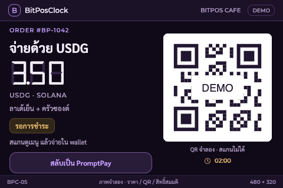
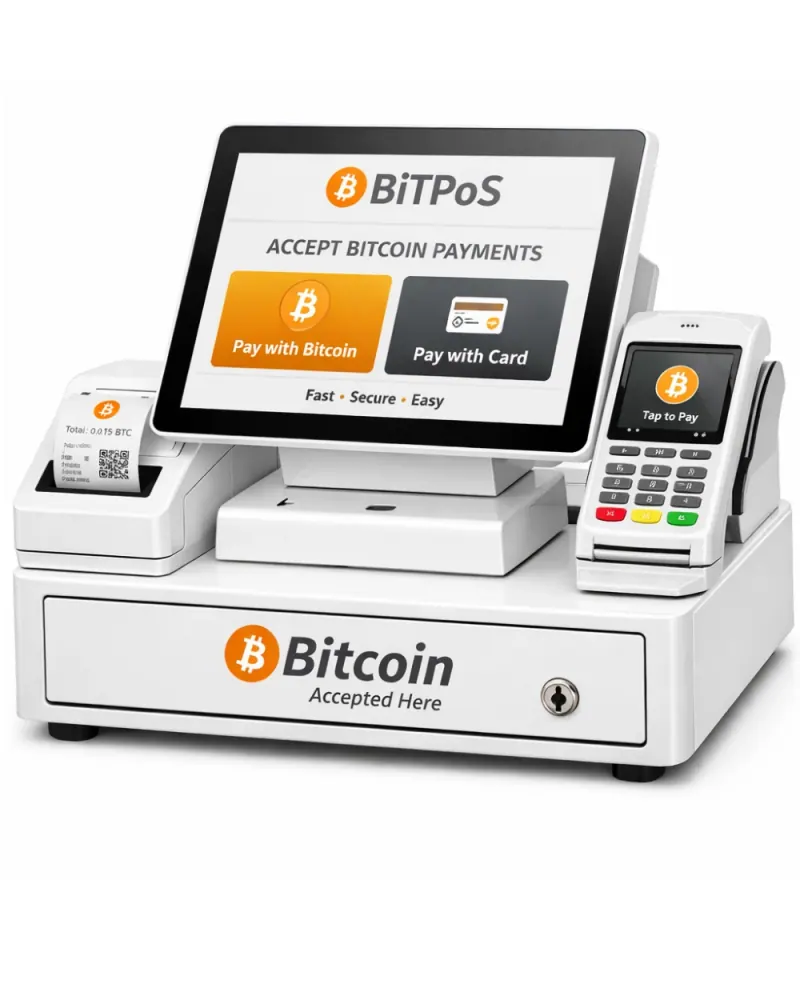
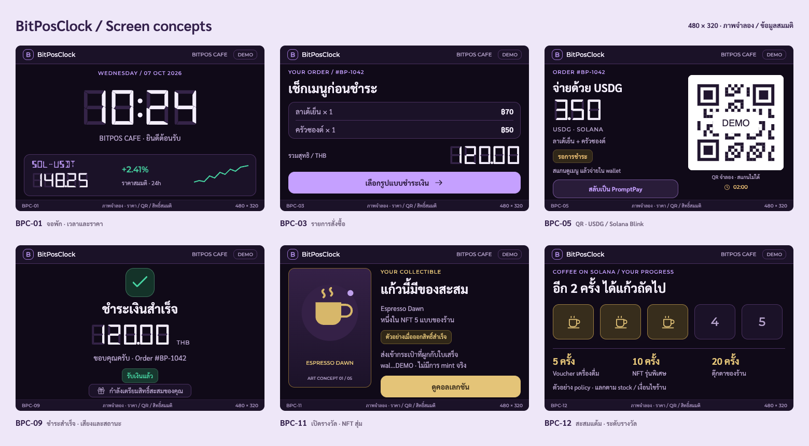

สแกน สั่ง จ่าย รับสิทธิ์
ใช้มือถือเลือกเมนูหรือให้พนักงานเลือก จ่ายด้วยช่องทางที่ถนัด แล้วติดตามแต้มและ voucher ได้
BitPOS รวม POS, จอชำระเงิน, USDG บน Solana และ loyalty ให้ร้านสร้างแคมเปญด้วย AI และลูกค้ารับสิทธิ์หลังจ่ายจริง
ใช้มือถือเลือกเมนูหรือให้พนักงานเลือก จ่ายด้วยช่องทางที่ถนัด แล้วติดตามแต้มและ voucher ได้
ข้อมูล order กับ payment ผูกกัน ใช้ AI ร่างแคมเปญตามเมนู ต้นทุน และผลที่วัดได้
จอแสดงบิลและ QR แล้วเปลี่ยนสถานะพร้อม animation/เสียง หลัง backend ยืนยันรายการ
QR ของ order ที่กำลังซื้อ, แคมเปญของสถานที่, collectible ที่มีประโยชน์ และ voucher ที่กลับมาแลกได้ จอช่วยเชื่อมสิทธิ์กับประสบการณ์หน้าร้าน แต่ browser POS ยังต้องใช้ได้โดยไม่บังคับซื้อ hardware
QR คงที่ไม่ได้พิสูจน์ว่าคนอยู่ที่ร้าน: check-in ต้องมี session/QR อายุสั้นหรือพนักงานยืนยันตามนโยบายที่ออกแบบเพิ่มPOS + USDG บน Solana + จอหน้าร้าน + loyalty ทำงานเป็นเส้นทางเดียว ตั้งแต่ขายสินค้าไปจนถึงการกลับมาของลูกค้า
ขายได้หลายช่องทาง และรู้ว่าลูกค้ากลับมาเพราะแคมเปญใด
เพิ่มการใช้ wallet และ stablecoin ในชีวิตประจำวัน ผ่านร้านที่ลูกค้ามีเหตุผลกลับมา
ประโยชน์ต่อ ecosystem เป็นสมมติฐานของโครงการ ส่วนหลักการ wallet/token/fee อ้างอิง Solana payment concepts ↗
จอที่อยู่กับเคาน์เตอร์ตลอดเวลา ทำให้ลูกค้าเห็นยอด วิธีจ่าย และผลลัพธ์ทันที

ฮาร์ดแวร์เป็นส่วนเสริมของหน้าร้านลูกค้าใช้มือถือและร้านใช้เว็บได้ เครื่องเพิ่มจุดแสดงผลร่วมกันที่เคาน์เตอร์ ต้องตรวจระยะสแกน QR, touch, เสียง และ render ACK บนบอร์ดจริง
ให้การรับเงินอิงดอลลาร์ และใช้โครงสร้าง stablecoin ที่มีอยู่แล้วบน Solana
อ้างอิง About USDG ↗ · Paxos reserves / redemption ↗ · AI × Solana track ↗
USDG เป็นตัวเลือกแรกของเดโม ส่วน stablecoin อื่นพิจารณาเพิ่มผ่าน payment adapter ภายหลังได้ ระบบยังเลือกจ่ายเงินสดหรือ PromptPay ได้ การรับ USDG ต้องมีช่องทางแปลงเป็นบาทหากร้านต้องการรับเงินเข้าธนาคารไทย และนับ fee / FX spread ในต้นทุนรวม การ redeem ตรงกับ Paxos มีเงื่อนไขบัญชีและ eligibility
ข้อมูล USDG / Solana ตรวจจากแหล่งทางการ 7 ต.ค. 2026 ลิงก์อ้างอิงต้องออนไลน์เมื่อกดเปิด ส่วนคุณค่าของ BitPOS เป็นเป้าหมายตามแผน ต้องวัดผลร้านนำร่องก่อนอ้างว่าช่วยเพิ่มยอดขาย ลดต้นทุน หรือทำให้ลูกค้ากลับมาจริง
อ่านเหตุผลและแหล่งข้อมูลฉบับเต็ม ↗กดเดินทีละขั้นเพื่อดูสิ่งที่ลูกค้า ร้าน และ backend ต้องเห็นตรงกัน
ข้อมูล fixture ใน browser เท่านั้น ไม่มีการ sign, รับเงินจริง, mint หรือส่ง notification ปุ่มเล่น flow ไม่ใช่การวัด latency ของระบบจริง
เลือกสินค้า → server คำนวณราคา → order ไปจอ → ลูกค้าชำระ ใช้สิทธิ์พนักงานใน merchant นั้น
QR เปิด customer web → เลือกเมนู → order ผูก location/session → wallet หรือ PromptPay ชำระ ใช้ pricing API ชุดเดียวกัน
แตะกล่องเพื่อดูหน้าที่และขอบเขตของแต่ละส่วน แผนภาพนี้เป็นแบบระบบที่จะพัฒนา
เมนู ยอดจ่าย wallet บิล และ reward มี order ID อ้างถึงร่วมกัน ไม่ใช้แค่ public key มาจับคู่รายการ
เครื่องแสดงผลที่ backend ส่ง ไม่ตัดสิน paid หรือสุ่มผลเอง เว็บขายยังทำงานได้เมื่อไม่มีเครื่อง
DB, chain และ device ไม่ commit พร้อมกัน ใช้ idempotency, outbox และ reconciliation
เปลี่ยนวิธีจ่ายได้ แต่ยอดและการยืนยันต้องมาจาก backend
พนักงานรับเงินจริง ยืนยันยอด/เงินทอนตามสิทธิ์ บันทึก payment และปิดบิล
เฟส 1 → 3Backend สร้าง PaymentIntent และ QR เฉพาะรายการ ปิดบิลเมื่อ verified webhook ยืนยัน
เฟส 3Backend สร้าง transaction ให้ wallet sign/send แล้ว watcher ตรวจข้อมูลบนเชนก่อน paid
เฟส 3Action API: GET ส่ง metadata/ปุ่ม/ข้อมูล order; POST รับ public key และประกอบ transaction; OPTIONS/CORS และ actions.json ทำให้ client ที่รองรับเรียกได้
Blink: client แสดง Action เป็น UI ให้กด sign ต้องมี customer website เป็น fallback เพราะมือถือ/กล้อง QR และ wallet ไม่รองรับเหมือนกันทั้งหมด
Solana เป็น Layer 1; USDG เป็น token ที่เลือกใช้ชำระบน Solana และ SOL ใช้จ่าย network fee การ sponsor fee เป็นงานออกแบบเพิ่ม ไม่จำเป็นต้องบังคับซื้อ CLOCK ก่อนซื้ออาหาร
อ้างอิง Solana Actions ↗ · ต้องออนไลน์เมื่อเปิดชื่อ token, การกด Sign หรือ client callback อย่างเดียว ยังไม่ถือว่าจ่ายสำเร็จ
THB และ USDG เก็บเป็น integer minor units; conversion quote ต้องมี rate/source/rounding/expiry ยืนยัน mint และ decimals ของ network จริง Devnet ใช้ test token ที่ติดป้ายชัด ไม่อ้างว่าเป็น USDG ที่ redeem ได้
order เดียวอาจมีหลาย payment attempts ถ้าลูกค้าจ่ายทั้งสองช่องทางจริง ต้องบันทึกทั้งสองเงินเข้าและจัดการส่วนเกิน ส่วน void บิล การคืน stock และ refund เงินเป็นคนละ operation
แยกจากเวลาที่ลูกค้า sign จน chain confirm ต้องทดสอบบน hardware จริงและรายงานเงื่อนไข ไม่ใช้ความเร็วของ animation ในคู่มือนี้เป็นผลวัด
เลือกเก็บตามหน้าที่ เพื่อให้ POS เร็ว ตรวจสอบได้ และเก็บข้อมูลส่วนตัวอย่างเหมาะสม
เมนู ราคา ต้นทุน stock รายการใน order สิทธิ์พนักงาน campaign แต้ม offchain การแลก voucher และ fulfillment
Solana: transaction และ ownership ของ token/NFT
Stripe: payment/refund records
ฐานข้อมูลเก็บสำเนาประวัติที่ตรวจจากต้นทาง
reserve ก่อนชำระ → commit เมื่อ paid → release เมื่อยกเลิก/หมดอายุ ใช้ database transaction และ recovery สำหรับรายการจ่ายช้า
บันทึก paid และ outbox ใน DB transaction เดียวกัน ให้ worker แจก reward แล้ว retry โดยไม่ให้ลูกค้าจ่ายซ้ำ
เป็น domain inventory ยังไม่ใช่ SQL schema ที่ migrate แล้ว
ใช้ merchant membership + server authorization + RLS ให้เหมาะกับ access path ไม่แสดง wallet/customer identifiers บนจอสาธารณะโดยไม่จำเป็น และไม่ส่ง WiFi password หรือข้อมูลลูกค้าไป public chain
รักษา UI, business rules, reports, ภาษาไทย/อังกฤษ และ owner / manager / staff โดยไม่คัดลอกทั้งเว็บไซต์

ภาพประกอบผลิตภัณฑ์จากเว็บไซต์เดิม ใช้ให้ทีมเห็นบริบทหน้าร้านและจุดที่จอรับชำระเงินเข้ามาช่วย
ภาพเดิมแสดง Bitcoin / card / printer จึงไม่ใช่ภาพบอร์ด BitPosClock หรือหลักฐานว่าเครื่องใหม่รองรับการพิมพ์และ Lightning แล้ว การออกแบบใหม่ดูในชุดหน้าจอด้านล่าง
มี tracked bilingual worktree เป็น candidate และ POS ใน Desktop checkout เป็น untracked ต้องเทียบทั้งสองก่อนย้ายเพื่อรักษาฟีเจอร์และคำแปล ความใหม่ของ remote ยังยืนยันไม่ได้
ต้นทางใช้ Google Sheets/Drive ผ่าน Apps Script และ demo JSON; เปลี่ยนเป็น Supabase เดิม sale บันทึกขายทันที ต้องแยก order/payment confirmation สำหรับ Stripe และ USDG
หน้าจอเดิมเป็น scope ที่ต้องรักษา ไม่ใช่หลักฐานว่าทุกฟีเจอร์ใน repo ใหม่ผ่าน tests แล้ว Image storage, export และ receipt/printing ต้องตรวจ parity ด้วย
BitPosClock คือชื่อจอหน้าร้านที่เสนอ ใช้ฐาน CryptoClock Pro แล้วแยก build, config, provisioning, version และ OTA
18 ภาพจำลองขนาด 480×320 ธีมม่วง ตั้งแต่จอพัก สั่งซื้อ จ่าย USDG / PromptPay ไปจนถึง NFT แต้ม voucher และการกู้คืนเมื่อขาดการเชื่อมต่อ
เปิดภาพจำลองทั้ง 18 หน้า ↗ออกแบบตาม cryptoclock-pro-design • เป็น visual prototype • QR / ราคา / wallet เป็นข้อมูลสมมติ

BitPOS/
device/
firmware/
schema/
assets/โฟลเดอร์ firmware มี README แล้ว
ยังไม่มี firmware source/build/flash ใน repo ใหม่
board/display/touch, LVGL, Wi‑Fi, MQTT, audio, SD, security/OTA และ fixes ด้าน memory/watchdog
endpoint/topic/auth, store shell, order state, QR, payment events และ readiness ที่ไม่รอ catalog CryptoClock
WASM/package/rendering/fonts/vendor libraries มีการพึ่งกัน ต้องตรวจและ pin versions ก่อนถอดส่วนที่ไม่ใช้
offline ต้องบอกสถานะและ resync เมื่อกลับมา ห้ามแสดง paid จากการแตะจอ และไม่เล่นเสียง order เก่าซ้ำเมื่อ reconnect
build จาก clone BitPOS ได้เอง → boot บนบอร์ดทดสอบ → จอ/touch/Wi‑Fi/SD/เสียงผ่าน → event dedup/reconnect ผ่าน → วัด render ACK
ตรวจ product/board/partition compatibility, clean source + binary hash, manifest และ rollback เครื่อง CryptoClock เดิมไม่รับ BitPOS OTA อัตโนมัติ
เจ้าของร้านเลือกเงื่อนไข ช่องทางจ่าย ระดับสะสม และประเภท reward ตามต้นทุนและ stock
ตรวจ eligibility ของ campaign ที่ผูกกับ order
เก็บ ledger / issuance และให้ claim ได้ตาม policy
ครบระดับแล้วแลกสิทธิ์ มี redemption และ fulfillment
จอสามารถแสดง QR เพื่อเปิดสิทธิ์ของ order ที่จ่ายแล้ว การ claim ต้องตรวจ receipt/session และ wallet binding ตาม policy ไม่ให้คนที่เดินผ่านสแกนแล้วรับสิทธิ์ของผู้จ่าย หากผูก wallet แล้ว worker อาจออก reward ให้ wallet นั้นและ QR ใช้ดูสถานะแทน
USDG รับชำระ; CLOCK เป็นทางเลือกสำหรับ loyalty ยังต้องเลือกว่าจะเริ่มจาก offchain points หรือ token spec บน Solana ไม่บังคับลูกค้าซื้อเหรียญก่อนซื้ออาหาร
random outcome เป็น backend authoritative ผูก grant ID และ campaign version; ถ้าสุ่มบน server ให้ระบุ trust model ไม่อ้างว่า provably fair และป้องกันการ claim/redeem ซ้ำ
NFT สะสมกับ voucher เครื่องดื่มอาจแยก asset/สิทธิ์กัน; onchain ownership ไม่เท่ากับแลกของจริงแล้ว ต้องตรวจ policy ตอนโอน NFT และตอน redeem ของจริงแยกจาก mint
เมนู + margin + ยอดขาย + payments ที่ตรวจแล้ว → ร่าง campaign → เจ้าของร้านเลือก publish → วัดผล
“ช่วยเพิ่มยอดช่วงบ่าย ให้ลูกค้าจ่าย USDG แล้วอยากกลับมาอีก โดยต้นทุนรางวัลไม่เกินงบ”
order ที่จ่าย USDG และผ่านเกณฑ์ → รับ collectible; ครบจำนวนที่ร้านตั้ง → ได้ voucher เครื่องดื่ม
เครื่องคิดเลขจำลองเพื่อเข้าใจข้อจำกัดที่ AI ต้องเคารพ ไม่ใช่ forecast และยังไม่รวม fee/ภาษี
สมมติทุกบิลมีคุณสมบัติและผู้ใช้แลกรางวัลครบ
ตอบจาก order/menu/query tools ที่มีสิทธิ์ ไม่ถือว่า wallet address ระบุบุคคลได้เสมอ
price, budget, margin, eligibility และ signature verification ไม่ขึ้นกับคำตอบของ LLM
จำกัด query/cost/ข้อมูลส่วนตัว ไม่อนุมานข้อแพ้อาหารจาก wallet และไม่ให้ model ถือ treasury keys
รวมไว้ใน roadmap ทั้งหมด และระบุให้ชัดว่าอะไรต้องใช้ partner access หรือความยินยอมของลูกค้า
ใช้ adapter และ external order ID ป้องกัน order ซ้ำ ต้องตรวจ partner/API access ก่อน demo; หากยังไม่มีให้ติดป้าย mock
เริ่มจาก inbox/web/app ของเรา ส่งไป wallet ได้เฉพาะ provider/client ที่รองรับและผู้ใช้ subscribe ไม่ใช่ push เข้า wallet ทุกแอปได้
เป็น optional legacy adapter: customer opt-in, account/device binding, quiet hours, TTL และ dedup แยกจาก paid event ของจอร้าน
Owner เลือก action หลังจ่ายหรือเข้าร่วมกิจกรรม WiFi voucher ต้องต่อ hotspot จริง; ใช้สิทธิ์ส่วนตัวที่หมดอายุและแลกได้ตาม policy
รักษา stack จาก POS เดิมเพื่อให้ extraction ตรวจเทียบได้ง่ายก่อน ไม่ rewrite ทุก framework พร้อมกัน
| ส่วน | Stack ตามแผน | หน้าที่ / สถานะ |
|---|
BitPOS/ ├─ apps/web/ merchant + customer + browser terminal ├─ apps/api/ POS API + Actions + webhooks ├─ apps/worker/ watcher + outbox + rewards ├─ packages/contracts/ shared schemas / events ├─ packages/ui/ POS UI + Thai / English ├─ packages/domain/ order / stock / loyalty rules ├─ device/firmware/ ESP-IDF store terminal ├─ device/schema/ device contracts ├─ device/assets/ terminal artwork / sounds / fonts ├─ integrations/cryptoclock/ legacy / home-device adapter ├─ supabase/migrations/ BitPOS schema + tenant policies ├─ infra/ staging / production setup ├─ docs/ plans / evidence / checkpoint └─ team-guide/ this offline handbook
ตัดสินใจต่อ: runtime ของ API/worker, AI provider, final token/NFT spec, notification provider และ instance/Auth boundary สำหรับ BitPOS
cryptoclocks/BitPOS · private ↗ทุกเฟสมี deliverable และ gate ไม่ผูกวันเสร็จที่ยังไม่มีหลักฐาน การส่งแข่งขันใช้ core flow ที่ทดสอบครบ
AI เฟส 6 เริ่มบน fixture/staging หลัง data contract เฟส 2 ชัด และ device UI เริ่มบน emulator ได้ก่อน event จริง ทุกส่วนต้องกลับมารวมใน end-to-end flow เดียวกัน
นี่คือการแบ่งหน้าที่ที่เสนอ ยังไม่ได้ใส่ชื่อสมาชิกหรือสัญญาระยะเวลา ทีมเลือกผู้รับผิดชอบตามคนที่มีได้
ผลตรวจ read-only วันที่ 7 ตุลาคม 2026 เวลาไทย ไม่ใช่ monitoring สดหรือผล load test
ยังไม่จำเป็นต้องล้าง Docker ครั้งใหญ่ก่อนเริ่มงาน แต่ต้องกันพื้นที่สำหรับ image/data/log และวัดการเติบโตหลังเริ่ม staging
รอบ audit ไม่ลบ container/image/volume ไม่ restart/deploy หรือแก้ production configuration
จุดเด่นที่เสนอคือร้านใช้งานได้จริง + AI สร้าง campaign + Solana settlement/rewards + feedback บนจอ ไม่กำหนดเปอร์เซ็นต์โอกาสชนะจากไอเดียอย่างเดียว
ตาม official rules ปิด 12 ต.ค. 2026 เวลา 23:59 PT = 13 ต.ค. 2026 เวลา 13:59 น. ไทย แต่ละสมาชิกลงทะเบียน และ team leader ส่ง project
Solana track ระบุ $100,000 สำหรับ 10 projects; Grand Prize $30,000 เป็น Phantom CASH ตาม rules ไม่ใช่ทุกงานจ่าย USDG
Prize pool 10,000 USDG ต้องลงทะเบียน Colosseum เลือกประเทศ Thailand และส่งทั้ง Colosseum กับ Superteam Earn
ต้องแสดง working demo และคุณค่าของ AI + Solana ให้ชัด เจาะผู้ใช้และช่องทางเข้าถึงจริง วันปิดของ Earn ให้ตรวจจากหน้า listing ขณะส่งอีกครั้ง
ข้อมูลการแข่งขันตรวจ 7 ต.ค. 2026; ลิงก์ภายนอกต้องออนไลน์ ข้อกำหนดเปลี่ยนได้ ให้ตรวจ portal อีกครั้งก่อนส่ง
Functionality/code, impact, novelty, UX, open-source/composability และ business plan ตาม Colosseum rules ทำ demo ให้ชัดว่าจ่ายจริง ส่ง event จริง และรางวัลไม่ซ้ำ
เปิดเผยที่มาของ POS/UI/Stripe/firmware และ third-party code เตรียม submission เป็นภาษาอังกฤษตาม rules Repo ตอนนี้ private: ตรวจเงื่อนไข code access/open-source ก่อนส่ง
ติ๊กเพื่อคุยในทีมเท่านั้น สถานะไม่ถูกบันทึกลง server และไม่ใช่หลักฐานว่า tasks ผ่านแล้ว
เริ่มจากร้านกาแฟหรือสถานที่ที่ทีมเข้าถึงให้ทดลอง 1 ร้านก่อน วัด checkout completion, repeat visits, voucher redemption และต้นทุนต่อ retained customer แนวรายได้ เช่น subscription POS, terminal หรือ campaign tools ยังเป็นสมมติฐาน ต้องสัมภาษณ์เจ้าของร้านและวัดความเต็มใจจ่ายก่อนตั้งราคา
เว็บนี้เป็นฉบับอธิบายสำหรับทีม เอกสารใน docs เป็นฐานแผนและต้องอัปเดตคู่กันเมื่อ scope เปลี่ยน
ไฟล์ .md เปิดเป็นข้อความหรือดาวน์โหลดตาม browser ถ้าส่งเฉพาะ ZIP คู่มือ เนื้อหาในเว็บและ diagrams ยังครบ ส่วนเอกสารต้นทางอยู่ในโฟลเดอร์ docs ภายในแพ็กเกจ